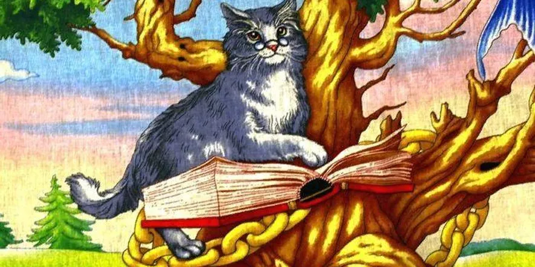

Кот ученый
Персонаж русских сказок

Кот ученый — персонаж фольклорного варианта «Сказки о царе Салтане» и вступления к поэме Руслан и Людмила. Считается самым знаменитым «кошачьим» персонажем в произведениях Пушкина.
- У лукоморья дуб зелёный;
- Златая цепь на дубе том:
- И днём и ночью кот учёный
- Всё ходит по цепи кругом...
Пролог к поэме "Руслан и Людмила" был написан в Михайловском в 1826 году и включён в текст 2-го издания, вышедшего два года спустя.
Образ «кота учёного» восходит к персонажу русской мифологии и волшебных сказок коту Баюну, в котором волшебный голос птицы Гамаюн объединился с силой и хитростью сказочного чудовища. В сказках кот Баюн, сидящий на высоком железном столбе, песнями и заклинаниями лишает силы всех, кто хочет подойти к нему. Чтобы поймать Баюна, Иван Царевич надевает железный колпак и железные рукавицы. Покорённого кота он приносит во дворец к больному отцу. Своими сказками Баюн исцеляет царя.
Сказки о коте Баюне и «коте учёном» обрели особенную известность благодаря распространению лубочных картинок. «Кот учёный» - это усмирённый и облагороженный вариант кота Баюна. Вот какую запись сделал Пушкин в Михайловском со слов няни Арины Родионовны: «У моря лукомория стоит дуб, а на том дубу золотые цепи, и по тем цепям ходит кот: вверх идёт — сказки сказывает, вниз идёт — песни поёт». Представляя содержание поэмы «Руслан и Людмила» как одну из сказок «кота учёного», Пушкин подчеркнул связь своего произведения с русским фольклором.
Ныне «кот учёный» и кот Баюн - очень популярные персонажи. В пространстве интернета «поселилось» множество таких «котов»: от литературных псевдонимов и наименования веб-журнала, до названия лекарственного препарата для кошек и подписей к фотоснимкам.